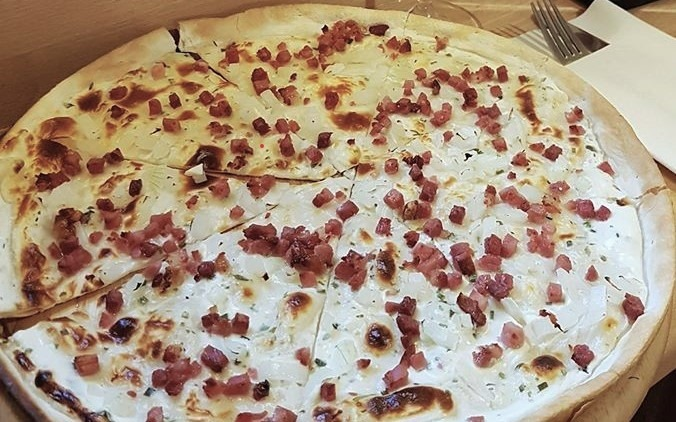

Flammkuchen-Donnerstag
Jeden Donnerstag zwei Flammkuchen ihrer Wahl und eine Flasche (0,75 l) Weiß- oder Rotwein für 19,90 €.

4./5. Dezember: Vorfreude auf Weihnachten für zu Hause (26 € pro Person)
Nachdem der Beaujolaisabend für zu Hause so gut angekommen ist,
bieten wir unseren Menüabend "Vorfreude auf Weihnachten" ebenfalls für zu Hause an.
Es wird als Vorspeise gratinierte Lachsklößchen geben,
zum Hauptgang geschmorte Rehkeule mit Wirsing-Kartoffelplätzchen und Rotweinbirne,
danach eine kleine Käseauswahl
und als Abschluss ein Lebkuchen-Panna cotta mit Glühweinkirschen
und einem Gewürz-Zimtcremestern.
Bestellungen nehmen wir bis Sonntag, 29. November unter 06434/9078750
oder per Mail weincafe@t-online.de an.